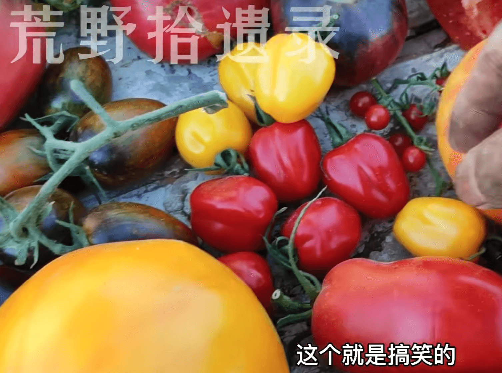

——一直很想有个自己的小院子种点蔬果。
之前不是提及送了一箱番茄的朋友么，朋友看起来确实很欢喜,直接炫了8个,甚至还射到了厨房墙上(
然后我突然想起,除了这个,还有什么番茄品种好吃的呢?我可以先去看看,万一某天俺发财了,有个自己的小院子,岂不美哉?
然后就关注到一个up: 荒野拾遗录;
很奇怪地,这个家伙被我拉黑了,或许我看他像一个营销号(
里边就有提及番茄的,太棒了,我进去主页一看,看到一款番茄,笑死了.
别伤心啦,小小的也很可爱.jpg hhhh
啊啊啊,好希望有自己的院子,然后种点什么.
品种:沼泽(绿色,大),余震(中),蓝色海湾(好看,中小,花青素),欧扎克(皮薄,中),智慧之珠(小,起沙),翡翠李子(甜,中长,绿色),曼得勒(橙色,规则,高产,大,沙),绯红女巫(中大,高产,花青素),
这几天买了奇怪的道具.朋友说我这是浪费钱.只能说,尝试一下.